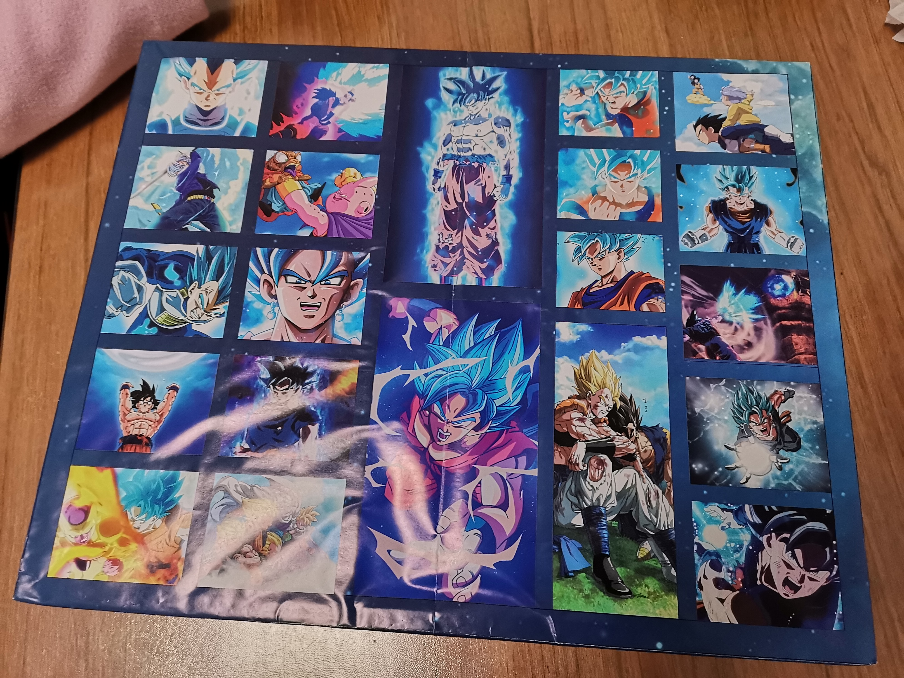
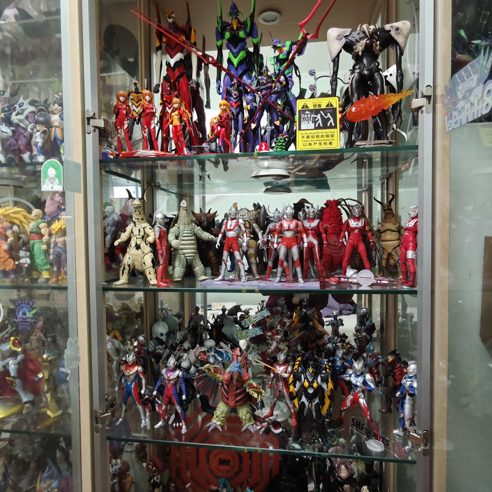
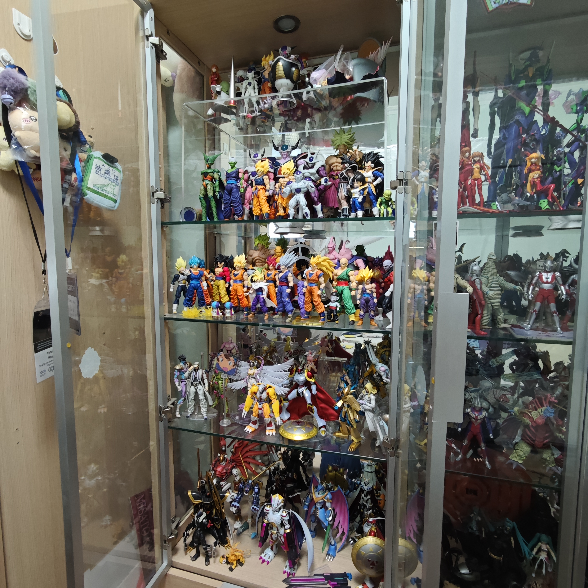
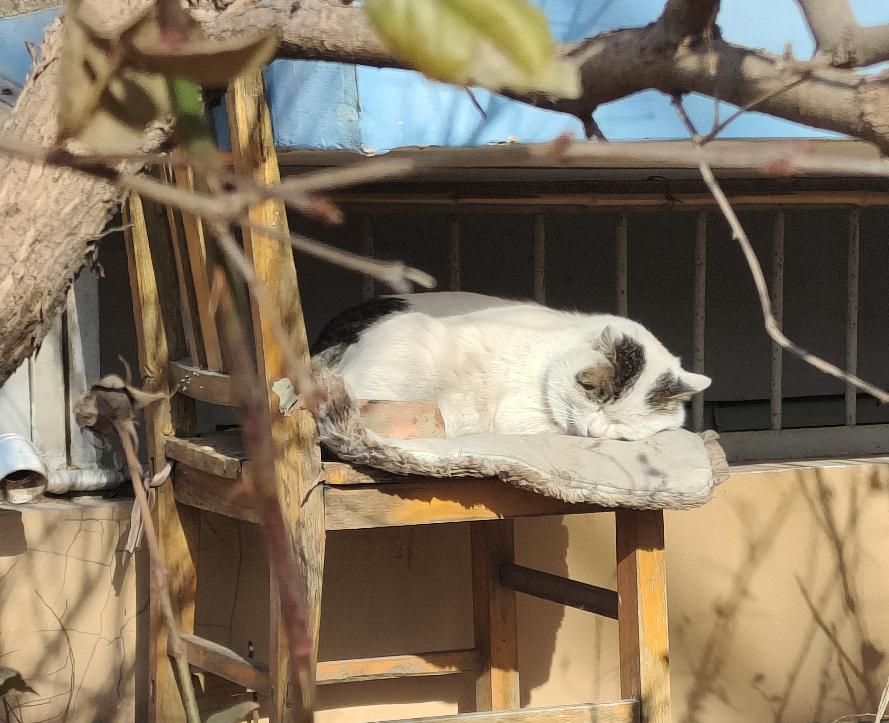
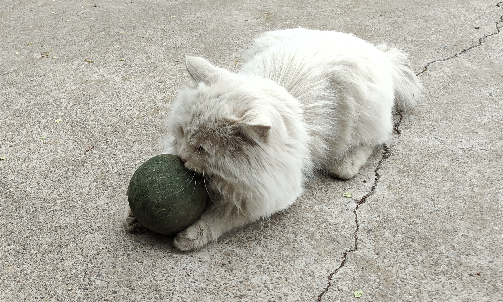
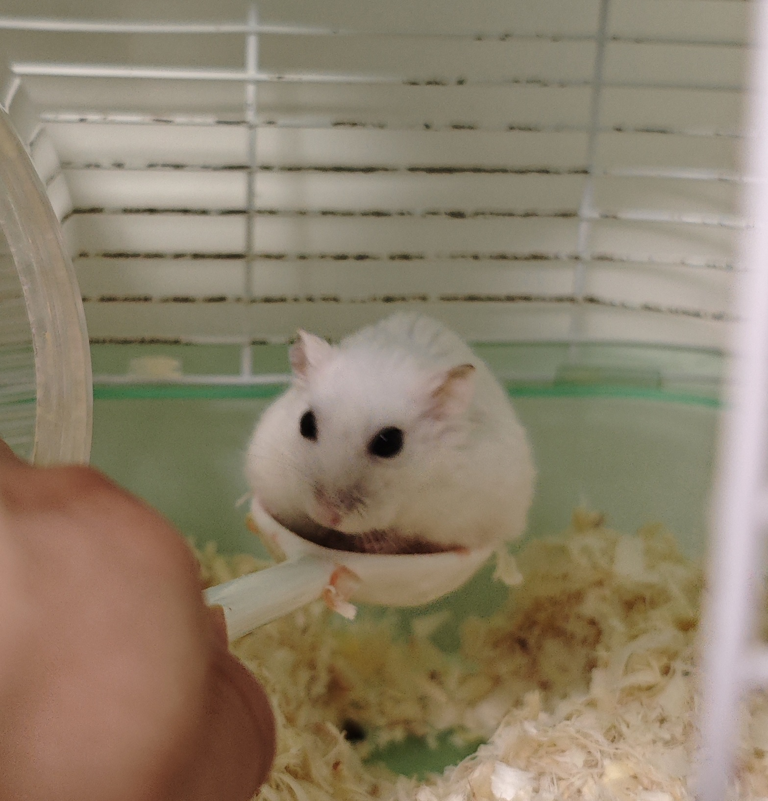
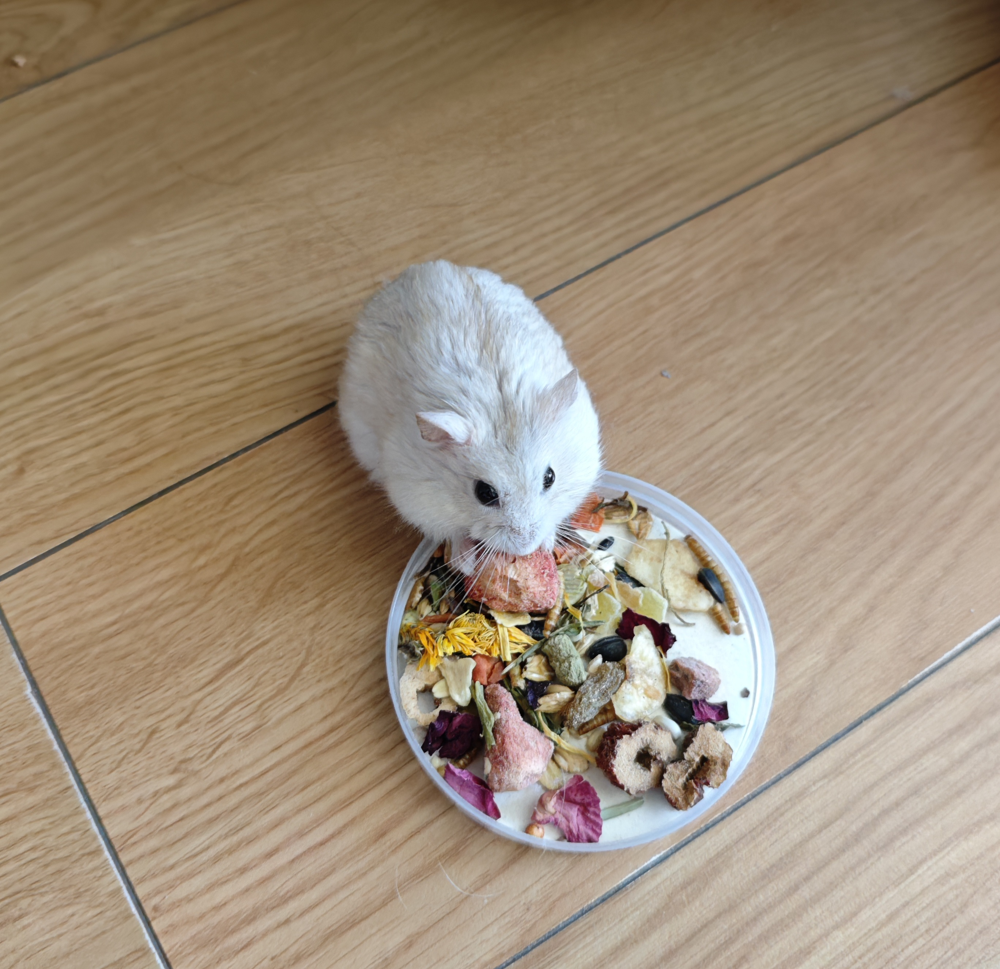
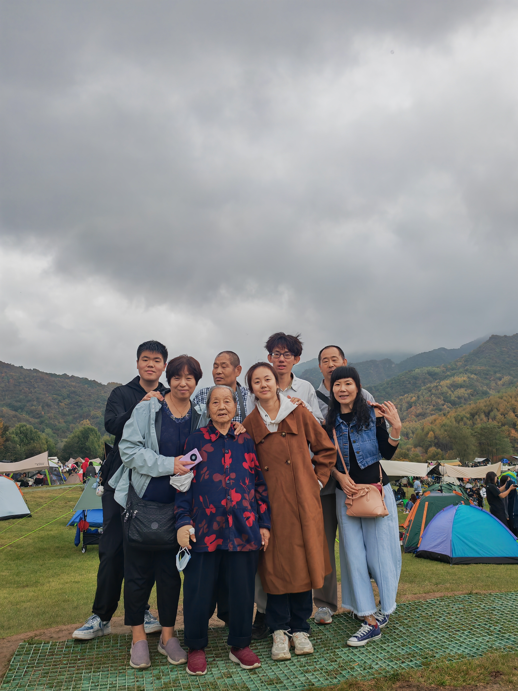

闲时所爱
闲下来，我喜欢收藏卡牌与玩偶， 琢磨一则尚未写成的谜题， 或是寻找日常里的风景。
给好奇心，也给生活，留一点空白。
桌游
把一个下午，交给一张桌子。
我喜欢和朋友一起玩桌游。规则为大家提供了共同的起点， 而真正让一局游戏变得有趣的，往往是参与其中的人： 临时改变的计划、出乎意料的选择， 以及某个让大家同时笑起来的瞬间。
输赢当然是游戏的一部分，但对我而言， 更值得珍惜的是围坐桌边的时间。 暂时放下各自的事情，一起思考、试探，也一起享受意外。

可动人偶
让喜欢的角色，从画面走到眼前。
我喜欢收藏动画、特摄作品中角色的可动人偶。 收藏主要围绕六英寸左右的可动人偶，主要为万代 S.H.Figuarts 系列； 喜欢的著名作品包括《龙珠》《奥特曼》《新世纪福音战士》 和《JOJO 的奇妙冒险》等。
吸引我的不只是造型与细节，还有角色背后的故事。 一件小小的收藏，能让熟悉的形象变得具体； 而可动关节又留下了调整姿态的余地， 让静止的物件也能呈现动作与场景。


本格推理
答案揭晓之后，故事还可以再读一次。
猫与仓鼠
有些喜欢，不需要复杂的理由。
我很喜欢猫，也很喜欢仓鼠。 猫的自在与好奇，仓鼠小小的身形和忙碌的动作， 都让人不自觉地放慢节奏。
这一项兴趣大概最不需要解释。 看着它们按自己的节奏活动， 会觉得日常里那些微小、柔软的事物， 本身就值得认真喜欢。




家人
这是我的家庭成员合照

这些兴趣不必指向同一个目标。 它们只是让我在研究之外，继续对故事、细节， 以及身边的世界保持好奇。